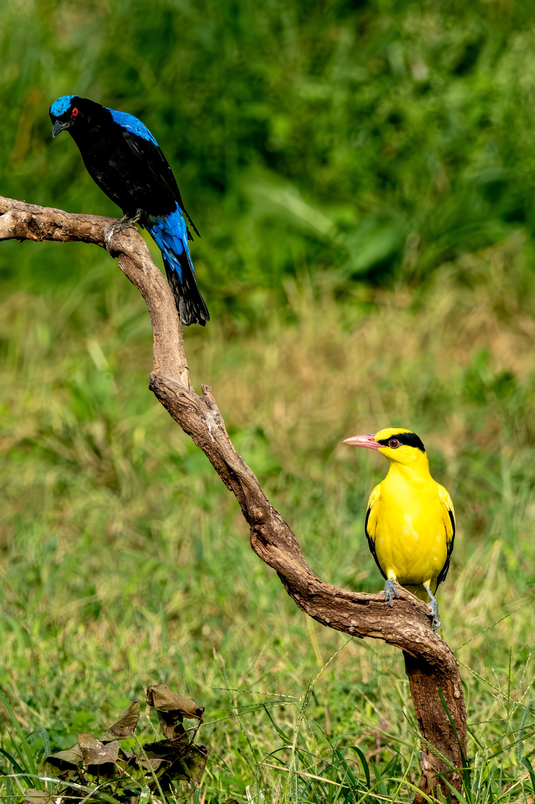

The Asian Fairy-bluebird is a beautiful Southeast Asian forest bird. Males are deep blue with a glossy black head, wings and tail, while females are generally duller blue-green. It is primarily a fruit-eater and usually moves through the forest canopy searching for berries and other food.
Asian Fairy-bluebird is best separated from Asian Glossy Starling by looking at the overall shape and the strongest plumage pattern rather than one small mark. Compared with Asian Glossy Starling, it has a different combination of colour, proportions and typical behaviour, which becomes clearer when the whole bird is visible. Black-naped Blue Flycatcher can also resemble it in some settings, but differences in bill shape, tail length, wing pattern, posture or habitat can help narrow the identification. Calls and behaviour are useful supporting clues when plumage is difficult to see, especially for birds that spend much of their time in dense vegetation. Using several features together is more reliable than identifying the bird from a single characteristic.
IOC World Bird List v15.2 — taxonomy and nomenclature, IUCN Red List of Threatened Species — global conservation status, BirdLife International — species distribution, ecology and conservation, eBird / Cornell Lab of Ornithology — identification and life-history information